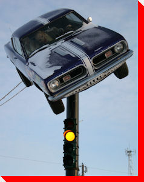

LARGE CANADIAN ROADSIDE ATTRACTIONS

1967 Barracuda
Brandon, Manitoba
Credit:
Darron Hyrsak
of
First Street First
Return to Manitoba Page
Return to Trans-Canada Highway Page
Main
|
What's New
|
By Location
|
Alphabetical Listing
|
By Type
Wanted Photos List
|
Links
|
Archive
Copyright © 2013 Ed Solonyka